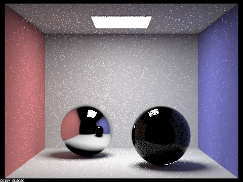
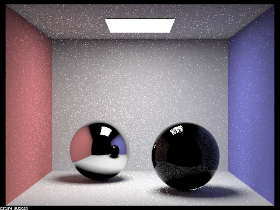

max_ray_depth set to 1

max_ray_depth set to 2

max_ray_depth set to 3

max_ray_depth set to 4

max_ray_depth set to 5

max_ray_depth set to 100

Each of the six images was rendered with 64 samples per pixel and 4 samples per light.
max_ray_depth set to 0
max_ray_depth set to 1
max_ray_depth set to 2

max_ray_depth set to 3
max_ray_depth set to 4
max_ray_depth set to 5
max_ray_depth set to 100
When max_ray_depth is equal to 0, there is no light rays bouncing off, so we can only see the light source, and we cannot see the spheres. When max_ray_depth is equal to 1, we can see that the walls and the outlines of the sphere. When max_ray_depth is equal to 2,